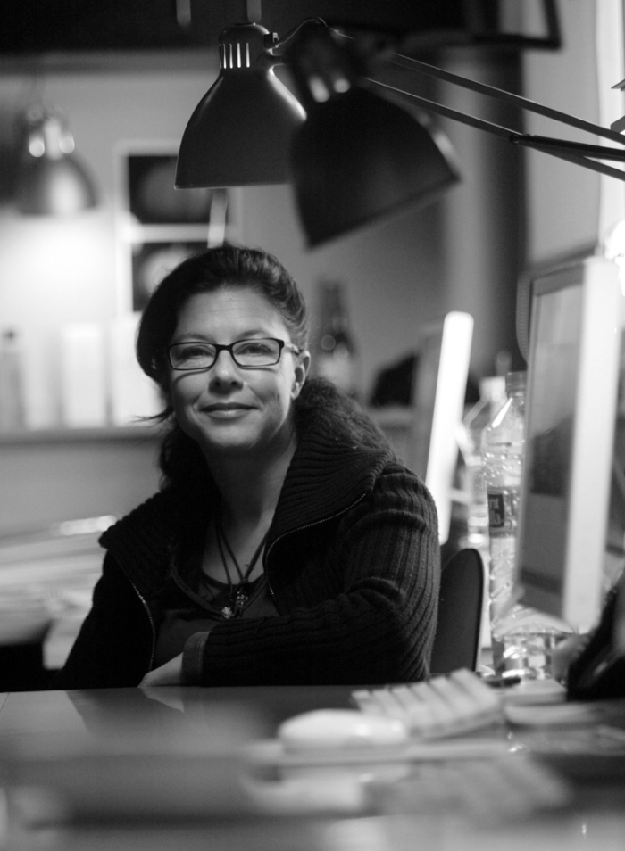

Biografía
Patricia Núñez Salmerón nació en Girona en 1959. Estudió diseño gráfico en la escuela Eina, donde demostró un talento excepcional y al terminar su formación pasó a ser docente con solo 19 años. En 1979 empezó a trabajar con Toni Selles, el cual la introdujo en la junta directiva de la asociación de directores de arte y diseñadores gráficos. Colaboró con diferentes firmas de diseño y publicidad hasta que en 1985 fundó su propio estudio, Pati Nuñez Associats, desde entonces ha trabajado en numerosos productos de éxito. Ha ganado premios Laus en las ediciones de 1983, 1985, 1986, 1988, 1992, 1994, 1996, 1999, 2022. En 2007, se convirtió en la primera mujer en ganar el Premio Nacional de Diseño en España. Su estilo se caracteriza por líneas elegantes y puras, sencillas e ideas directas, mensajes potentes y emotivos que se anticipan a los deseos del mercado y se adaptan a las necesidades de cada cliente y proyecto.
